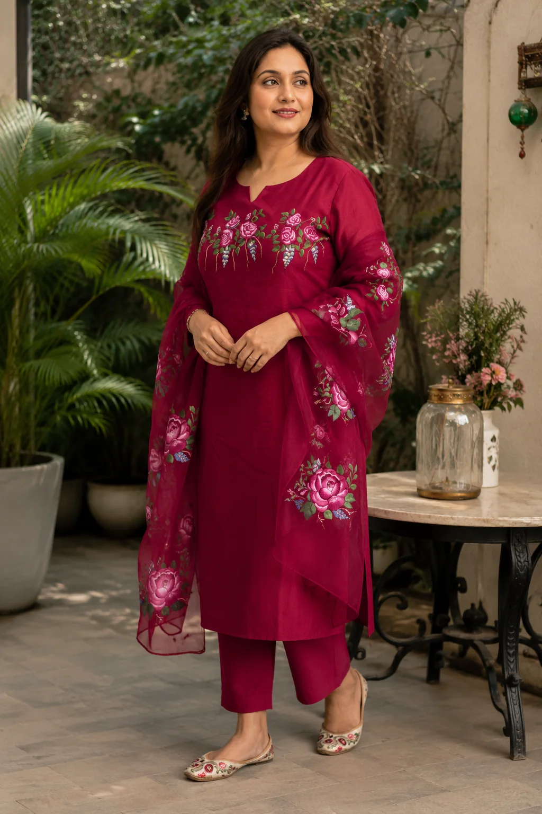
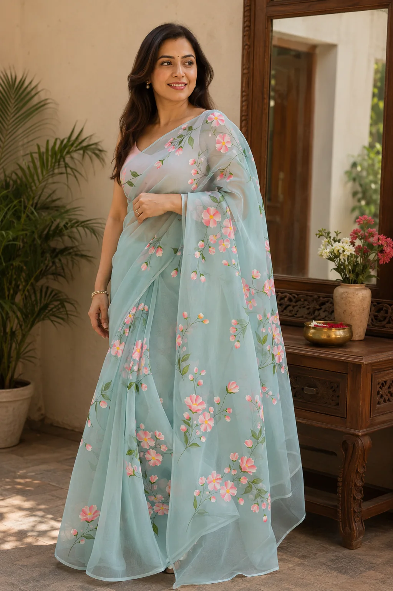
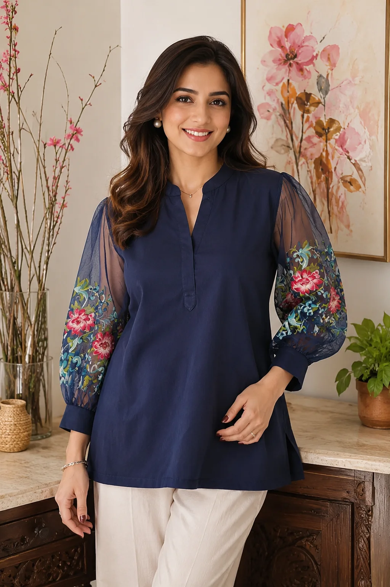

The wearable art collection
Craftswomanship
you can wear.
No prints. Just authentic hand-painted art, made patiently by Madhvi Garg and ready to become uniquely yours.
Customise your apparel
Hand-painted · made to order
Three-piece suit set
Roses that took three days to open.
Inspired by roses after the first monsoon showers, this set brings quiet elegance to a graceful three-piece silhouette. Every floral motif is painted entirely by hand, an expression of grace, growth, quiet confidence, and the beauty of handcrafted imperfections.
Choose the fabric and colour, sleeve and kurta length, neckline, fit, florals, initials, or a matching dupatta and coordinated family outfits.
Enquire about the suit set
Hand-painted · made to order
Organza saree
Sea-green, and quiet about it.
Soft as a morning breeze, this is a hand-painted organza saree inspired by flowering branches in spring. Pastel blossoms dance across its sea-green drape, bringing freshness, femininity, and a quietly timeless ease.
Make it yours through saree colour, floral placement, personal initials, a matching hand-painted blouse, custom motifs, and gift-ready personalised packaging.
Enquire about the saree
Hand-painted · made to order
Short kurti
Navy, until you look closer.
A rich navy silhouette with sheer sleeves that bloom in hand-painted florals. Inspired by moonlit gardens, it balances deep indigo serenity with vibrant, delicate brushwork, an understated piece for brunches, workdays, festive gatherings, and evenings out.
Choose your fabric and colour, sleeve style, neckline, fit, floral placement, initials, or matching outfits for a family or special occasion.
Enquire about the kurti